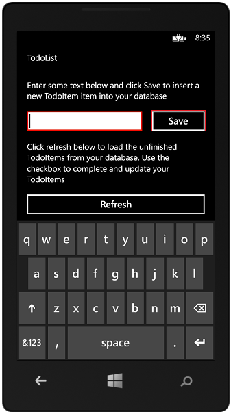

Universal Windows app project for Azure Mobile Services using MVVM
Introduction
This universal Windows 8.1 app project sample shows you how to use Azure Mobile Services to leverage data in a universal Windows app project for both Windows Store and Windows Phone Store apps. Unlike the TodoList quickstart project that you can download from the Azure Management Portal, this version of the Windows universal app project uses a shared view-model class to perform all the data access from your mobile service.
Prerequisites
Completing the project requires the following:
- Visual Studio 2013 Update 2, which supports universal Windows app projects.
- An active Microsoft Azure account.
- An existing mobile service. If you haven't created one yet, complete this tutorial to do so.
Updating the app project for your mobile service
This project is ready to go to access your existing mobile service, you just need to supply your service URL and application "key."
- Download this universal Windows 8.1 app solution
- Complete the quickstart tutorial (if you haven't already).
- Open the MainViewModel.cs project file from the \GetStartedWithData.Shared\ViewModel and update the following code that creates the MobileServiceClient by replacing with the placholders with the URL and app key from your mobile service.
- private static MobileServiceClient MobileService = new MobileServiceClient(
"AppUrl",
"AppKey");
- private static MobileServiceClient MobileService = new MobileServiceClient(
That's it. Now the apps use your mobile service to store and retrieve data, where both apps have access to the same stored data.
Building and running the universal Windows app
- In Visual Studio 2013 Update 2, open the sample solution GetStartedWithData.
- Press F5 to build and start the Windows Store 8.1 app.

- Enter text in the textbox and click Save.
Added items appear as a checkbox item in the list. - Stop debugging, and then press F5 to run the app again.
Notice that the previously added items are restored after the app loads. - Right-click the Windows Phone 8.1 project, click Set as Start-up Project, then press F5 to start the Windows Phone Store app.

Note that the data you previously added using the Windows Store app is displayed in the Windows Phone app. - Repeat steps 3 and 4 to verify that the sample behaves the same way.
More Information
For more information about Mobile Services and to find the other tutorials, see the Mobile Services developer center on azure.com.